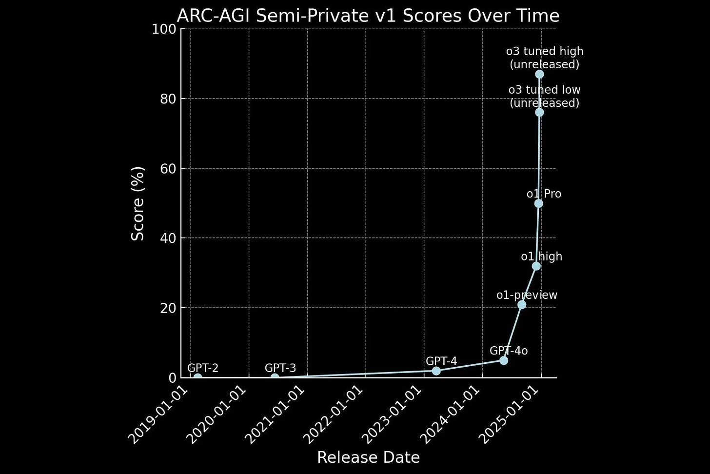

Zur Information: Die Antragsbearbeitung hat volle 3 Monate gedauert, weil die für meine Begriffe die Arbeitsbescheinigung aufgrund von Softwareferhlern verlegt hatten.
Bewerbungsaktivitäten
Weiterbildungsaktivitäten
Grundlegende Änderung in der Softwareentwicklung:
Seit Herbst 2024 gibt es Endwicklungsumgebungen (IDEs) die KIs erstmals Zugriff auf hunderte Codedateien ermöglichen aus denen ein Programm besteht. Dadurch kann die KI nun erstmals effektiv programmieren. Die Rolle des Softwareentwicklers verschiebt sich von jemandem der Code schreibt, zu jemandem der die KI mittels einer Serie von Prompts anleitet, während die KI nun bis zu 90% des Programmcodes schreiben kann. Arbeiten die bei manueller Entwicklung 6 Monate dauern würden reduzieren sich dadurch auf z.B. 2-3 Wochen. Je nach Projekt gibt es Unterschiede.
Aktivitäten
- ab Herbst 2024 Entwicklung einiger Software mit KI (wenige davon github öffentlich)
- inhaltlich: Alles was ich schon immer tun wollte, wofür ich aber nie die Zeit hatte geht mit KI nun deutlich schneller und läßt sich auch als Code sample in Bewerbungen verwenden.
- Entwicklung mit den jeweils neusten IDEs (dezeit z.B. Windsurf IDE)
- Erfahrung sammeln: Eigenheiten und Prompts
- In Bewerbungen läßt sich dann mit Recht behaupten Erfahrungen wären vorhanden (mehr hat damit eh noch keiner gemacht). Das ist ein Wettbewerbsvorteil.
- 2025: noch bessere KIs mit Reasoning Fähigkeiten (OpenAI)
- 2025: Evntl. wieder andere IDEs mit besserer KI Integration (?)
- 2025: Agentic KIs kommen dazu
Jahresübersicht Entwicklungsaktivitäten 2024
nur manche Projekte sind auf github veröffentlicht,
Quelle: https://github.com/walter-a-jablonowski

Zunahme der Intelligenz von KI
